Самостоятельная работа: дизайн-прототип
Интерактивный прототип из восьми состояний, UI kit и файлы для импорта в Figma. Ответственный за сопровождение — Ян.
Что подготовлено
| Артефакт | Путь | Как открыть |
|---|---|---|
| Интерактивный прототип | design/prototype/index.html | открыть — двойной щелчок по файлу, сервер не нужен |
| UI kit | design/prototype/ui-kit.html | открыть |
| 11 SVG-фреймов для Figma (версия 0.2.0; в версии 0.1.0 — 8) | design/figma-import/frames/ | перетащить в Figma |
| SVG-компоненты | design/figma-import/components/ | импорт на страницу «UI kit» |
| Инструкция по импорту | design/figma-import/README.md | Markdown |
| Дизайн-направление и токены | design/README.md | Markdown |
| Генератор | design/tools/build_prototype.py | python3 design/tools/build_prototype.py |
Прямого доступа к Figma при подготовке проекта не было, поэтому Figma-файл и ссылка на него не создавались. SVG-фреймы и компоненты импортируются в Figma вручную по инструкции; связи прототипа в Figma описаны там же таблицей.
Восемь состояний
Фреймы 360 × 800 построены из тех же токенов, что и Flutter-тема (lib/app/theme.dart). Справа — реальные скриншоты версии 0.2.0 для сравнения. Прототип упрощает графику и данные (например, иконки и числа), но повторяет структуру, порядок элементов и переходы.
| № | Фрейм прототипа | Приложение | Что показывает |
|---|---|---|---|
| 1 | 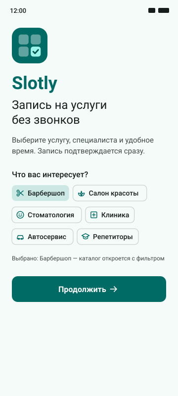 | 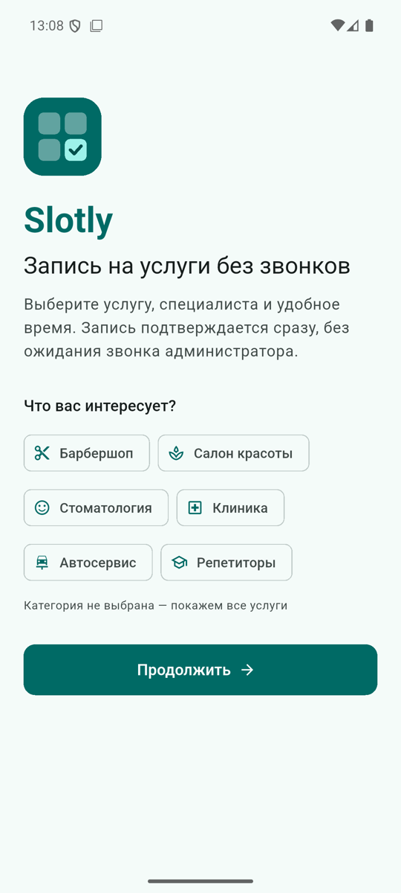 | Welcome, выбранная категория, «Продолжить» |
| 2 | 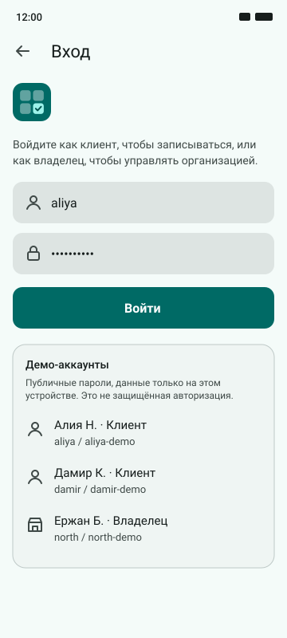 | 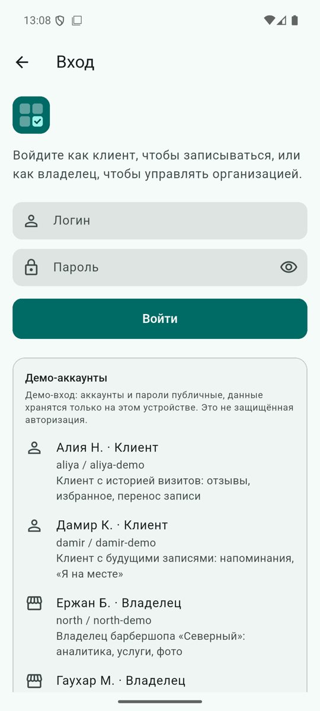 | Вход, публичные демо-аккаунты |
| 3 | 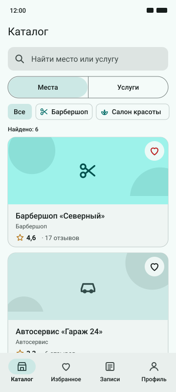 | 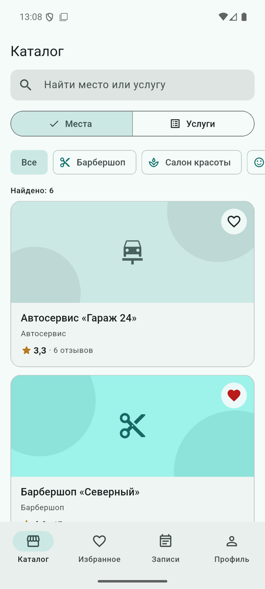 | Места с рейтингом, сегмент «Места / Услуги», сердце |
| 4 | 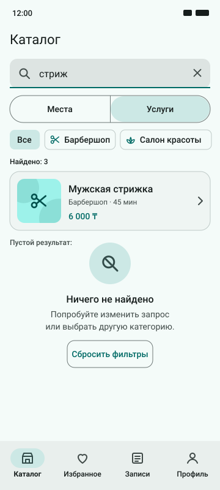 | Режим «Услуги», результат и пустое состояние | |
| 5 | 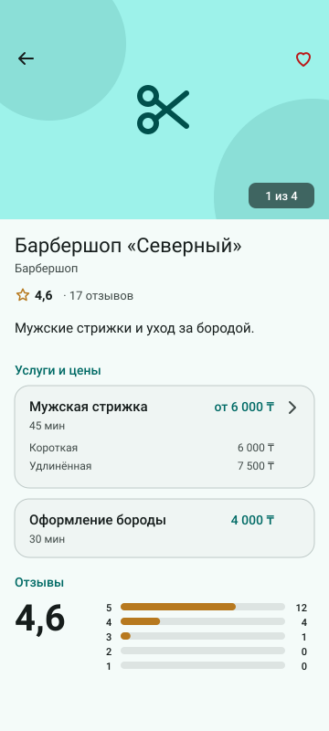 | 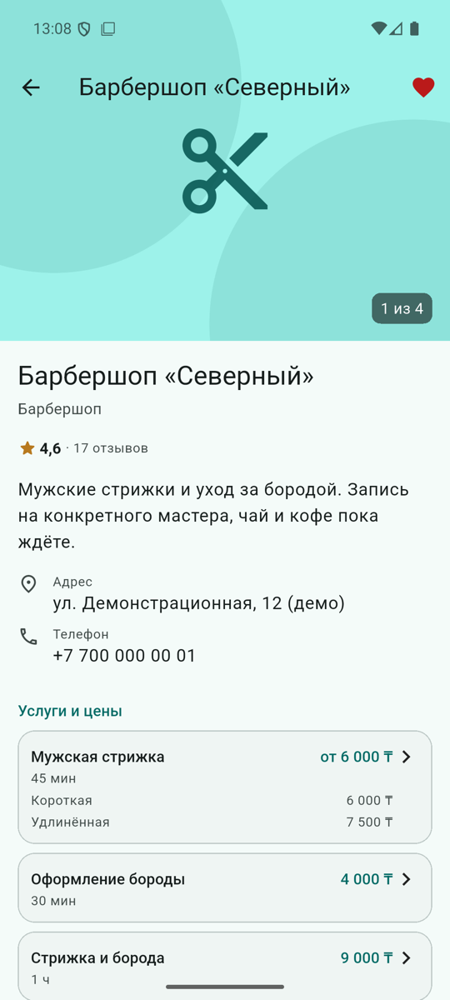 | Галерея, рейтинг, прайс с вариантами, распределение оценок |
| 6 | 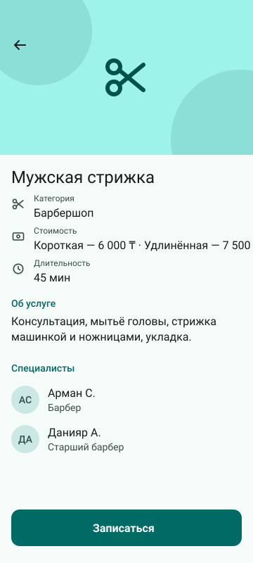 | 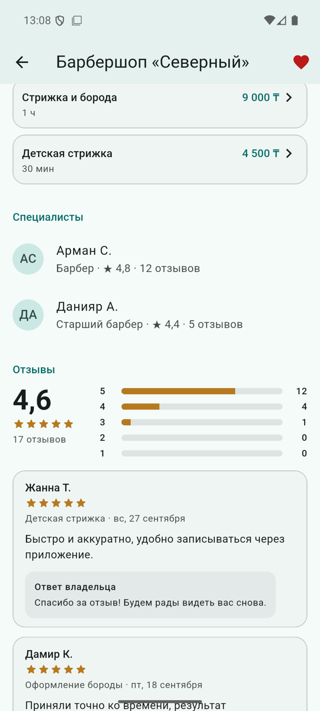 | Цены по вариантам, специалисты, «Записаться» |
| 7 | 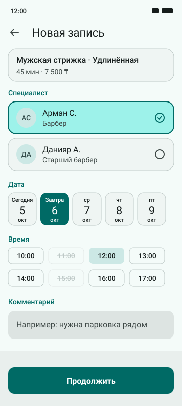 | 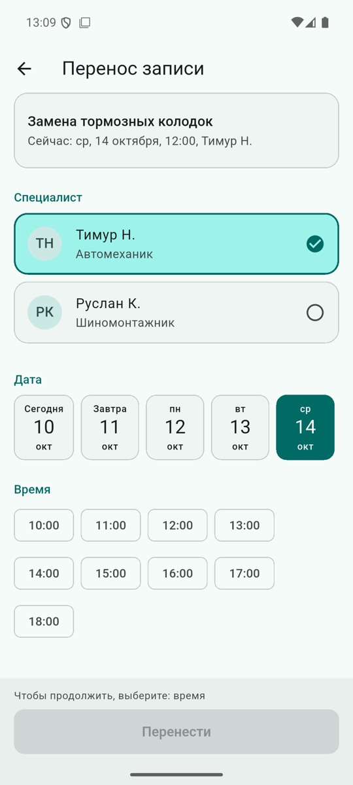 | Выбор варианта, специалиста, даты и слота |
| 8 | 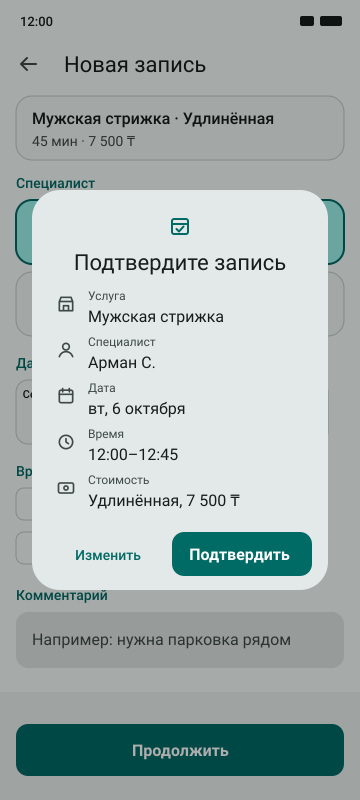 | 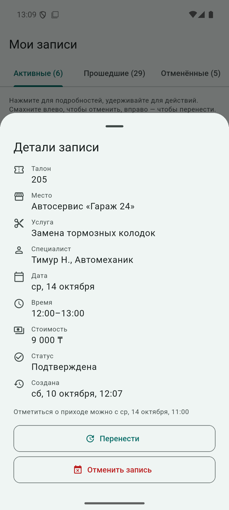 | Итог записи перед сохранением |
| 9 | 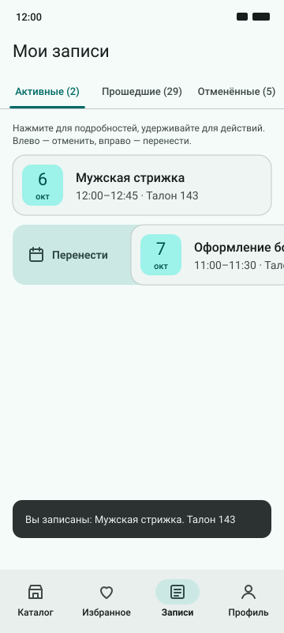 | 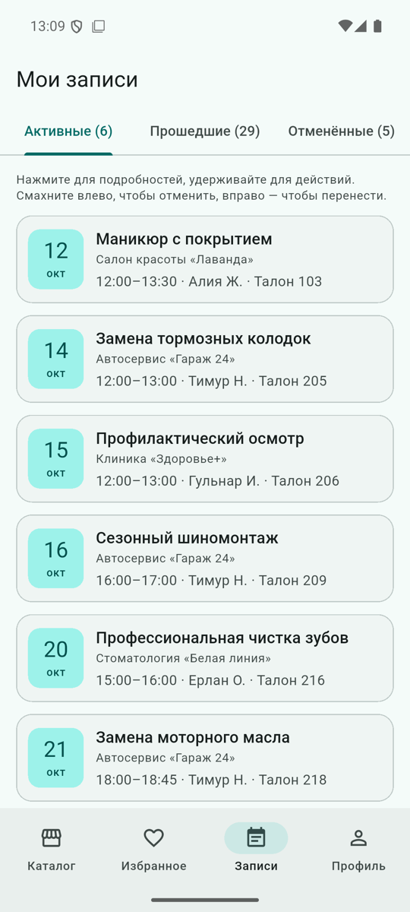 | Три вкладки, свайп вправо — перенос, номер талона |
| 10 | 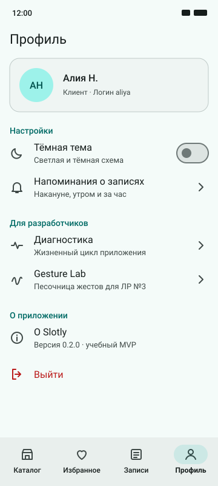 | 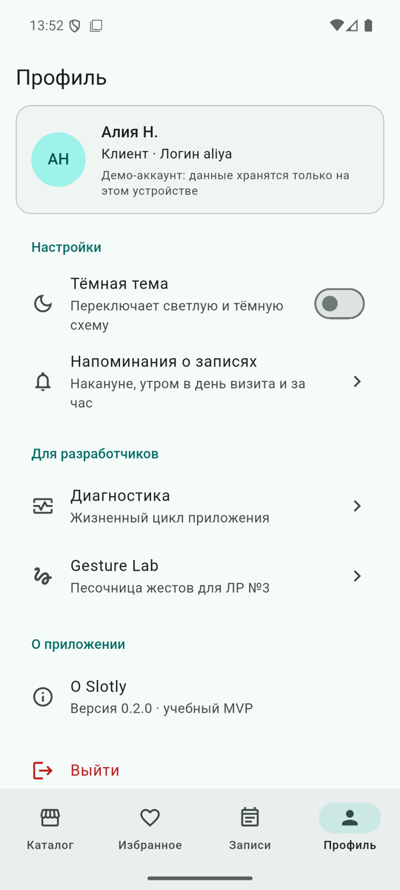 | Настройки, напоминания, «Для разработчиков», выход |
| 11 | 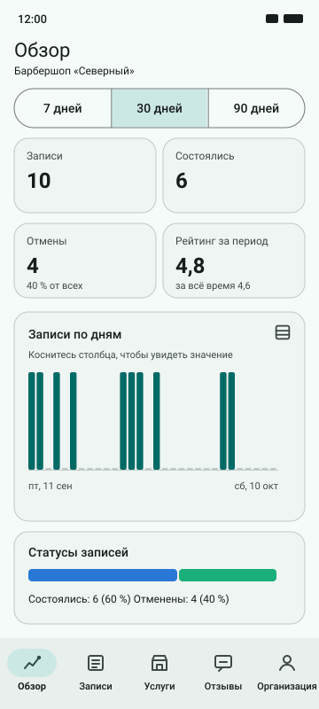 | 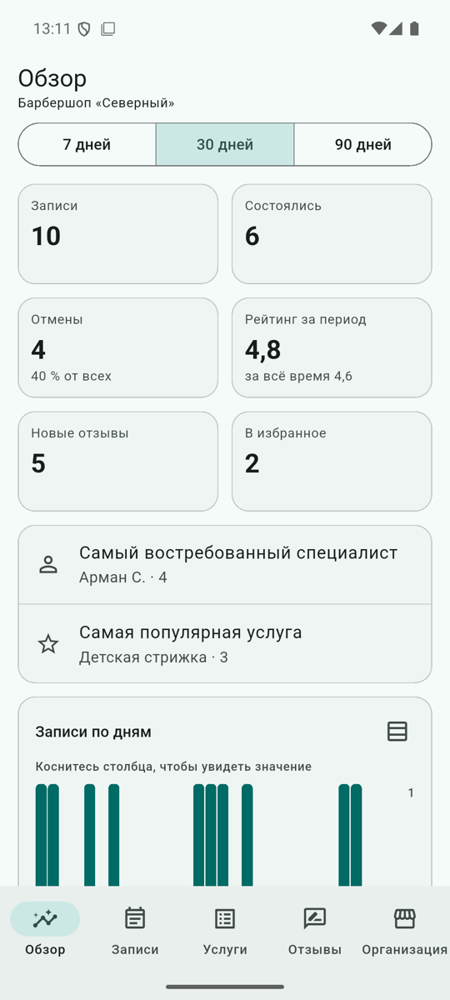 | KPI за период, столбцы по дням, статусы |
Кликабельный сценарий
В index.html нажатия внутри телефона ведут по основному сценарию версии 0.2.0: Welcome → «Продолжить» → Вход (демо-аккаунт) → Каталог мест → карточка «Северного» → Организация → «Мужская стрижка» → Детали → «Записаться» → Вариант, специалист и время → «Продолжить» → Подтверждение → «Подтвердить» → Мои записи. Из каталога переключатель «Услуги» ведёт к поиску услуг, из профиля «Выйти» — на Welcome, а демо-аккаунт владельца на экране входа — к фрейму «Обзор владельца».
Проверка графа переходов скриптом (10 октября 2026): все 11 фреймов достижимы из Welcome, у каждого фрейма есть выход, у каждого перехода основного сценария есть кликабельная зона, несуществующих целей нет.
UI kit
- Цвета светлой и тёмной схемы с ролями применения.
- Типографика Material 3 и где какая роль используется.
- Шкала отступов 4–32 dp и радиусы 8 / 12 / 16 / 28.
- 24 иконки с соответствием константам
Icons.*во Flutter. - Компоненты в состояниях: кнопка (default, pressed, disabled), поле ввода (default, focused, error), временной слот (available, selected, unavailable), карточка услуги (default, pressed), чип (default, selected), нижняя навигация.
- Живые HTML-примеры hover, pressed, focus, disabled и error.
- Правила использования компонентов.
Соответствие прототипа приложению
- Цвета, радиусы и отступы — те же константы, что в
AppTheme,AppSpacing,AppRadii. - Иллюстрации услуг повторяют
ServiceArtwork: тот же фон по варианту и те же круги. - Логотип — та же геометрия, что в
SlotlyLogoи иконке приложения. - Отличия: в прототипе упрощённые линейные иконки вместо Material Icons и фиксированная ширина 360 dp (в приложении — ширина устройства).